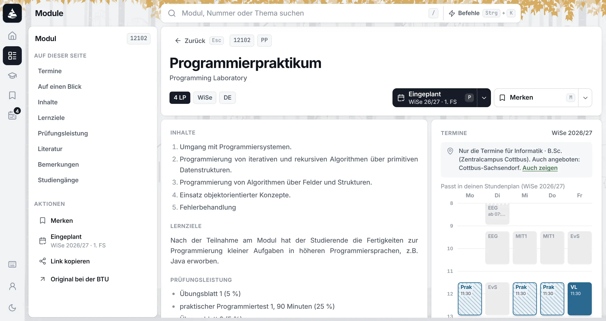
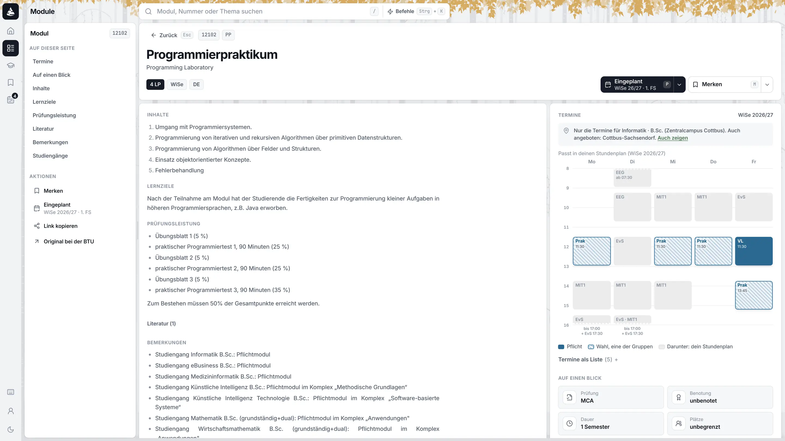
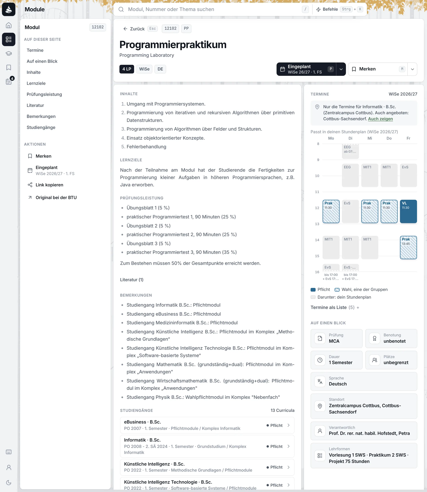

Folia · Modulseite am Rechner · 19. November 2026 · gelesen in Folia 1.110.0
Heute zeigt die Seite eines Moduls am Rechner viel Rahmen und wenig Inhalt. Die Seitenleiste springt nur zu Abschnitten einer kurzen Seite, der Kopf nimmt ein Drittel des Bildschirms, und die Fakten kommen erst nach dem ersten Scrollen. Hier sind drei Konzepte. Alle drei räumen die Seite auf dieselbe Weise auf (rechts), aber jedes beantwortet die Frage „Was soll beim Scrollen immer zu sehen sein?“ anders: A stellt den Steckbrief des Moduls in die Seitenleiste, B dein Studium mit dem Modul, C seine Woche. Jedes ist ein Bildschirm zum Anklicken und Scrollen, mit drei echten Modulen und drei Bildschirmgrößen.
„Hey claude, wir müssen unbedingt nochmal die volle modulseite auf dem PC überarbeiten. Irgendwie sieht die müllig aus. Infromationen werden nicht effizient dargestellt. Wir haben an der seite eine unnütze übersicht like ich brauche keine navigation für eine seite mit nur 1000px zum scrollen. Wir brauchen eine bessere visual hirarchy eine sinnvolle nutzung der Seitenleiste und keine verschwendung von platz. Alles muss hier eingebettet sein.“ — du
Was alle drei teilen
Ausgangslage
Programmierpraktikum (12102), wie canary es zeichnet (Folia 1.110.0), mit Informatik B.Sc. als Mein Studiengang und dem Modul im WiSe 2026/27 eingeplant. Links dein Bildschirm (1280 × 680), daneben die ganze Seite und ein großer Bildschirm.



Konzept A
Die Seitenleiste wird zum Steckbrief des Moduls: oben Einplanen und Merken, darunter alle Fakten, dann dein Studiengang und die Quelle. Sie bleibt beim Scrollen stehen, also sind Knöpfe und Fakten immer da. Die Seite rechts gehört den zwei großen Dingen: den Terminen, Woche und Liste nebeneinander, und den Texten, paarweise nebeneinander.
Konzept B
Die Seitenleiste zeigt, was das Modul für dein Studium heißt: in welches Semester du es legst (die Semester stehen offen zur Wahl statt in einem Menü), ob es in deinen Stundenplan passt, wo es in deinem Studiengang steht und ob du seine Voraussetzungen eingeplant hast. Die Fakten wandern als Zeile mit Kennzahlen in den Kopf. Darunter stehen die Texte links und die Termine rechts nebeneinander.
Konzept C
Die Seitenleiste hält die Termine: eine kleine Woche, die Liste und die Prüfungstermine. Wer liest, worum es geht, sieht daneben immer, wann es ist. Die Seite selbst wird eine ruhige Leseseite: der Kopf mit den Knöpfen und den Kennzahlen, dann die Texte zu zweit nebeneinander.
Nebeneinander
Breite und Länge folgen dem Modul und dem Bildschirm, die oben in der Leiste gewählt sind. Die Konzepte zeigen alles offen: die Liste der Termine und alle Studiengänge.
| A · Steckbrief | B · Dein Studium | C · Woche | |
|---|---|---|---|
| Was beim Scrollen stehen bleibt | Knöpfe und alle Fakten | Dein Semester, „Passt“, Voraussetzungen | Woche, Liste, Prüfungstermine |
| Auf dem ersten Bildschirm (1280 × 680) | Titel, Woche mit Liste, alle Fakten, die Knöpfe | Titel, Kennzahlen, Anfang von Texten und Woche, dein Plan | Titel, Kennzahlen, Inhalte, Lernziele, die ganze Woche |
| Breite der Woche heute 320 px | – px | – px | – px |
| Länge der Seite heute 1.467 px, mit zugeklappter Liste und 5 der 13 Studiengänge | – px | – px | – px |
| Ohne „Mein Studium“, auf dem Server | Alles da außer den Knöpfen | Die Seitenleiste ist fast leer | Alles da außer Knöpfen und „Passt“ |
| Modul ohne Termine | Wie sonst, der Abschnitt sagt es | Wie sonst | Die Seitenleiste ist fast leer |
| Wie die Vorschau neben der Liste | Dieselben Teile, anders verteilt | Neue Teile, die die Vorschau nicht hat | Die Termine links statt oben |
| Zu bauen | Wenig: die heutigen Teile neu geordnet | Viel: Semester, Voraussetzungen mit Stand, „Passt“ | Mittel: kleine Woche, Kennzahlen |
| Gegen frühere Entscheidungen | Knöpfe nicht mehr in der Zeile der LP | Dasselbe | Keine |
Was ich bauen würde
A beantwortet deine drei Punkte am direktesten. Die Seitenleiste trägt, was man auf dieser Seite immer braucht, der Kopf wird schmal, und auf dem ersten Bildschirm stehen Woche, Liste und alle Fakten. Es sind die heutigen Teile, nur neu verteilt, darum ist es auch am schnellsten gebaut.
ModuleFull und Sidebar in widgets/src/module.rs und ihr Stil. Die Anker der Abschnitte werden englisch (#dates …), die alten führen weiter hin. Folia ginge um eine Nebenversion hoch.Zum Entscheiden
Jeweils mit meinem Vorschlag. Ein „passt“ reicht, wo du zustimmst.
Daten: canarys Datenstand vom 19. November 2026 (Folia 1.110.0): 12102 Programmierpraktikum, 12202 Softwarepraktikum und 11112 Mathematik IT-1 mit ihren Terminen im WiSe 2026/27, Texten, Fakten und Studiengängen, wie ihre Seiten sie zeigen, dazu der Kurs von 12102 in Cottbus-Sachsendorf. Das Studium ist ein Beispiel: Informatik B.Sc. (PO 2008), begonnen im WiSe 2026/27, im Plan des WiSe 2026/27 Programmierpraktikum, Entwicklung von Softwaresystemen (EvS), EEG und Mathematik IT-1 (MIT1). Die Semester zur Wahl in B und der Stand der Voraussetzungen folgen aus diesem Beispiel. Nichts davon ist gebaut.